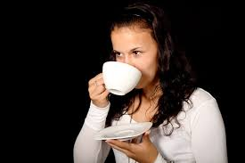

¿Qué hay en lo que bebemos?
La presente Situación de Aprendizaje se enmarca en el bloque de contenidos relacionados con la materia y sus propiedades dentro de la materia de Física y Química de 2º de ESO. A través de una metodología activa, experimental y contextualizada, el alumnado se aproximará al estudio de las mezclas y disoluciones partiendo de situaciones cercanas y cotidianas, como el análisis de bebidas de consumo habitual.
La propuesta pretende favorecer un aprendizaje significativo mediante la observación, la manipulación y la experimentación en el laboratorio, permitiendo que el alumnado construya el conocimiento científico a partir de la investigación y la resolución de situaciones reales. De este modo, se fomenta el desarrollo de destrezas científicas básicas como la observación, la formulación de hipótesis, la interpretación de resultados, el trabajo cooperativo y la comunicación científica.
La secuencia didáctica sigue una progresión coherente que parte de la motivación inicial y la activación de conocimientos previos, continúa con la exploración práctica y la estructuración de contenidos, y culmina con la aplicación de los aprendizajes en la elaboración de un producto final. Este enfoque facilita no solo la adquisición de conocimientos conceptuales, sino también el desarrollo de competencias clave relacionadas con el pensamiento científico, la competencia digital, la comunicación lingüística y el trabajo en equipo.
Asimismo, la Situación de Aprendizaje incorpora estrategias metodológicas inclusivas y principios del Diseño Universal para el Aprendizaje (DUA), ofreciendo múltiples formas de participación, representación y expresión que favorecen la atención a la diversidad y la implicación activa de todo el alumnado.
Finalmente, el producto final permitirá que el alumnado aplique y comunique lo aprendido mediante la creación de un recurso divulgativo sobre una disolución cotidiana, favoreciendo la creatividad, la autonomía y la conexión entre la ciencia escolar y la vida diaria.

Detectando las ideas previas
Responde a las preguntas del cuestionario de detección de ideas previas